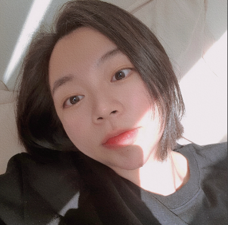
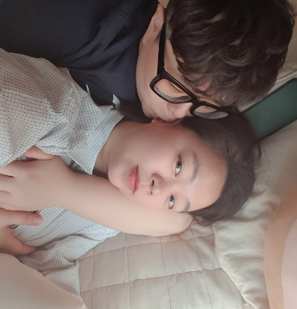
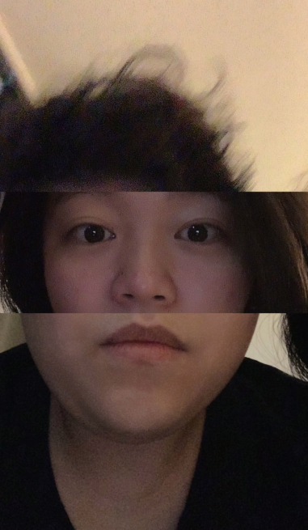

22.04.01
아픈 몸을 이끌고 일을 끝마치고 집에 와 지친 모습이다
일하면서 엄청 힘들어했는데 코로나 양성 반응이 안 나왔다
그리고 마침내 양성이 떠서 자기가 쉴 수 있게 되었다
코로나 걸렸으면서 같이 있어서 좋다는 우리😊
목이 너무 아파서 수건 빨래를 가습기처럼 썼다
다정한 닝우가 따뜻한 물을 끓여주었다
고마웠다
집에 꼼짝없이 갇힌 우리는 이상형 월드컵을 했다
나의 대단한 상상력에 닝우가 하하 웃었다
22.04.02
닝우는 젖은 휴지를 다시 쓰려 말리는 중이었고
나는 그게 진심이라는 것에 하하하 웃었다
귀여운 닝우😆
22.04.03
자가격리를 하는 것인지 피서를 온 것인지 모르게
우리는 코로나인데도 잘도 고기를 구워먹었다
진짜 맛있게 구웠다
22.04.04
슬슬 칩거 생활을 지루해하는 닝우다

닝우 부모님께서 맛있는 것을 가져다주셨다
닝우가 좋아하는 문어 숙회와 메밀 전병을 먹으며
막장의 막장인 사랑과 전쟁을 보았다😎
22.04.08
드디어 자가격리가 끝났다!
너희 벌써 어디 가니?
응 여기는 여의도고 나는 꽃보다 예쁜 닝닝이야
내가 벚꽃 구경을 좋아해서 닝닝이가 수많은 인파를 뚫고
나와 같이 꽃을 봐주었다 행복한 봄날이었다🌸
22.04.09
얘 또 이러네
22.04.10
오잉? 닝무! 이게 뭐예요?
김다시 생일 축하해😊
우와 닝무가 준비한 생일 선물이었다!
빔으로 내가 보고 싶어하던 라라랜드를 틀었다
좋아하는 영화를 사랑하는 사람과 보다니
선물 같은 시간이었다
걱정이 태산인 닝무와 생일 기념 외출을 했다!
여기는 봄기운이 잔뜩 핀 송도입니다~
얼마 전엔 벚꽃을 보고, 여기에선 개나리를 봤다🥰
하루 일정이 꼬여서 입이 대빨 나온 닝무를 보며
귀여웠고 고마웠다
어느 멋진 카페에 가서 사진을 찍었다
하루의 마지막에 라라랜드로 들어온 기분이었다🎞️
잔뜩 행복한 나
돌아와서 허기를 이기지 못한 우리는
배달을 시켜놓고 라면송을 들으며 라면을 먹었다
그리고 케이크가 있는 생일상을 받았다
이렇게 종일 축하 받는 생일은 처음이었다
행복한 생일을 선물해줘서 고마워
22.04.12
따스한 햇살에 누워 평화로운 우리
22.04.13
이 멋진 분은 누구죠?
제 여자친구랍니다!
유난히 섹시해보였던 날🤤
이거 뭐야 언니~?
언니가 생일 선물로 사준 향수가 왔다!
내가 요새 자주 뿌리다가 다 쓴 걸 보고
생일 선물로 사주었다 고마워🎁
올 때 메로나라고요?
메로나 들고 언니를 데리러 갔다!
22.04.14
자기가 좋아하는 콘치즈를 먹었다
우리 자기는 콘치즈만 보면 행복해지는 귀염둥이다

육회를 잘 먹어줘서 너무 고마워... 정말...
자기가 풀을 뜯어 먹는다
22.04.15
교수님! 어디가세요?
자네의 모교를 방문하러 가네
거기 학생! 이쪽으로 오게
우리 학교에서 커플 사진을 찍었다😊
내가 학교 벚꽃 보러가자고 난리 난리를 피워서
니무가 같이 가주었다 그런데 꽃이 다 졌다🫠
그래도 즐겁게 산책하고 저녁을 먹었다
오늘의 저녁은 치킨난방!(남방...?난반...?)
그런데 다녀와서 두부김치도 먹었다구요~
즐거운 외출이었다
22.04.19
벛꽃과 개나리를 거쳐 자기가 나에게 준 꽃이 또 있다
진달래!
꽃을 좋아하는 나를 위해 진달래 공원을 데려가줬다
마음이 봄처럼 방방했다
우리 꽤 잘어울리죠
알아요 미녀미녀 커플이에요~
자기가 나를 사랑스러운 눈으로 보는 모습이 찍혔다
우리는 공원도 들렀다
예쁜 복숭아 나무 아래 계단에서 사진을 찍었다😊

자기가 좋아한다던 맛집에 갔다!
내가 못되게 나왔다고 했다
저 여우 같아요? 곰인데
바로 앞에 있는 공원에 갔다
기분이 좋아서 숨바꼭질 하자구 그랬다
자기는 내가 좋아하는 여행을 좋아한다
나도 자기가 좋아하는 여행이 좋은데😊
22.04.23
학교에 갔다가 내가 침을 흘리며 갖고 싶어하던 인형이 왔다
언니야 사게 해줘서 고마워🎁
얘네 잘 어울리죠?
얼굴 합치는 어플을 써봤다
따로 태어나서 다행이었다
밥 먹으면서 미스터트롯 본다구요?!?!
나는 미적지근한 반응으로 시작했지만
지금은 트로트에 목매는 사람이 되었다
22.04.24
또 잘 먹는 우리😋
뭘 봤는지는 모르지만 미스터트롯 봤을 것이다
미스터트롯 만큼이나 좋아하는 담꾹 부찌
22.04.27
ㅋㅋㅋㅋㅋ닝우야 어떻게 이 안경을 쓰고 살아남는 거야...?
닝우의 미모를 다시 인정하는 시간이었다
22.04.28

이번에는 응칠을 보고 있다
보다가 흐지부지 되는 건 이때부터 그랬다
22.04.30
이놈들 남의 집에서 뭐해!
4월 마지막 날 닝우의 친구분들을 만났다
강아지가 나를 무섭게 했다🐶